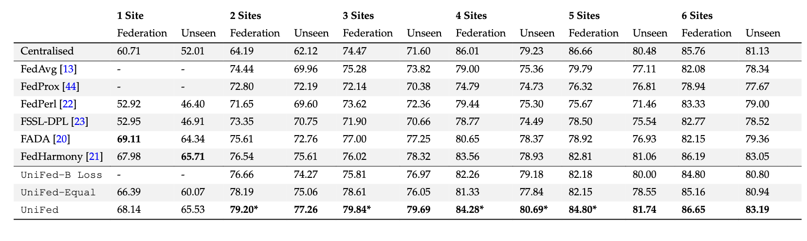
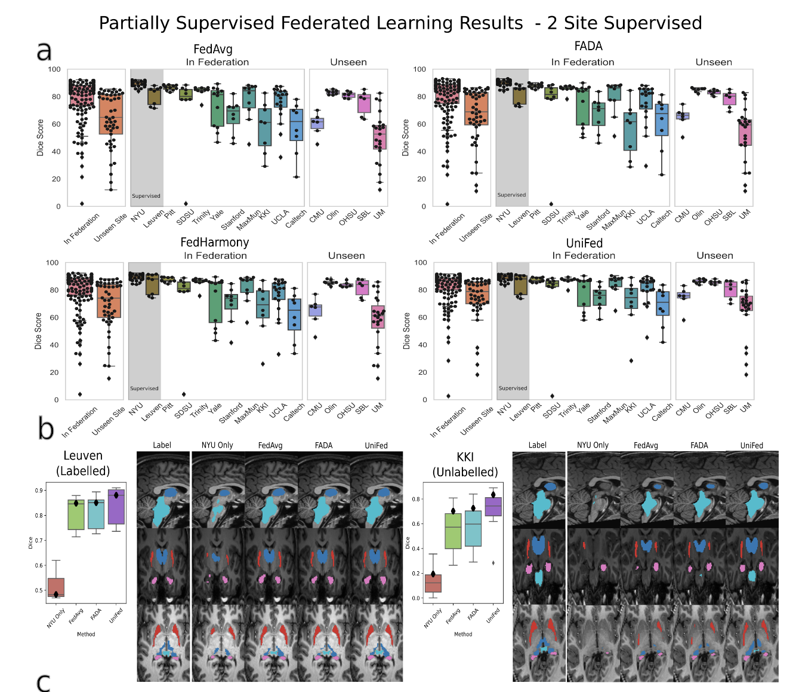
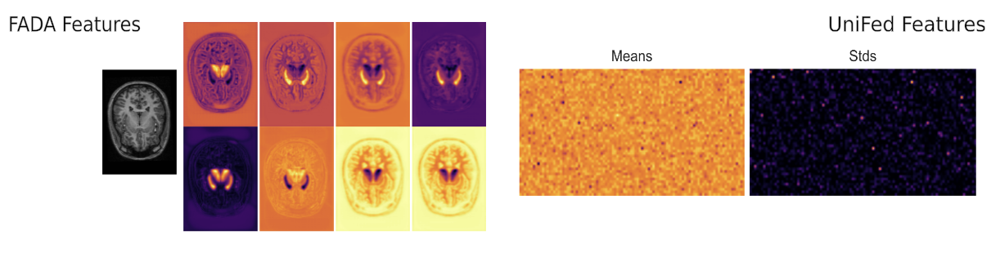
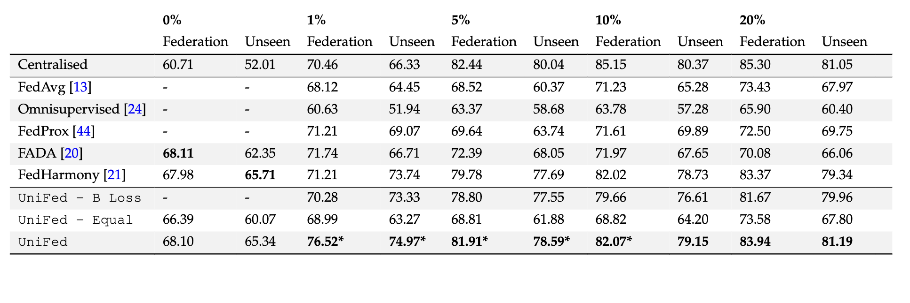
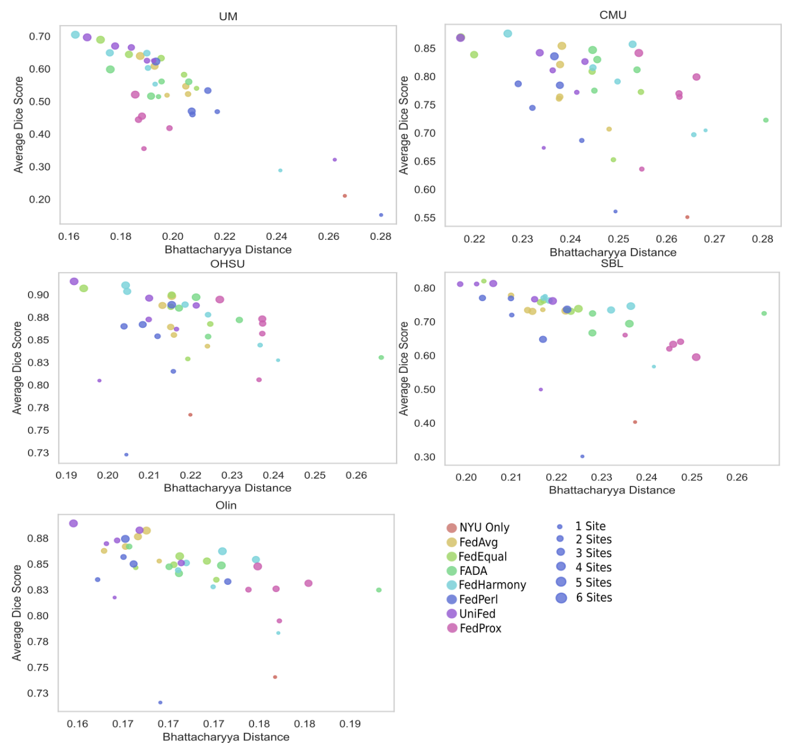
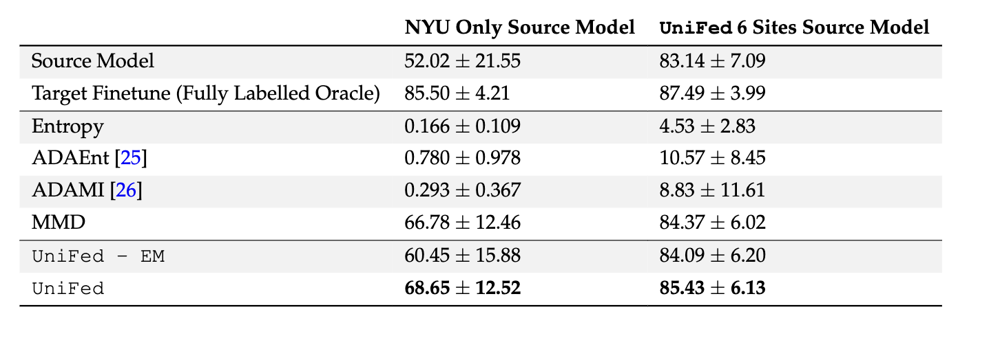

|
1Oxford Machine Learning in NeuroImaging (OMNI) Lab, University of Oxford
|
|
2Wellcome Institute for Integrative NeuroImaging (WIN), University of Adelaide
|
|
3Australian Institute for Machine Learning (AIML), University of Adelaide
|
|
4South Australian Health and Medical Research Institute (SAHMRI)
|
|
[Paper]
|
[GitHub]
|
Abstract
|
It is essential to be able to combine datasets across imaging centres to represent the breadth of biological variability present in clinical populations. This, however, leads to two challenges: first, an increase in non-biological variance due to scanner differences, known as the harmonisation problem, and, second, data privacy concerns due to the inherently personal nature of medical images. Federated learning has been proposed to train deep learning models on distributed data; however, the majority of approaches assume fully labelled data at each participating site, which is unlikely to exist due to the time and skill required to produce manual segmentation labels. Further, they assume all of the sites are available when the federated model is trained. Thus, we introduce UniFed, a unified federated harmonisation framework which enables three key processes to be completed: 1) the training of a federated harmonisation network, 2) the selection of the most appropriate pretrained model for a new unseen site, and 3) the incorporation of a new site into the harmonised federation. We show that when working with partially labelled distributed datasets, our methods produce high-quality image segmentations and enable all sites to benefit from the knowledge of the federation. The framework is flexible and widely applicable across segmentation tasks and choices of model architecture.
|
UniFed
|
We propose UniFed, a unified federated harmonisation framework, which enables three key processes to be completed:
|
|
1) the training of a federated harmonisation network on partially labelled data
|
|
2) the selection of the most appropriate pretrained model for a new unseen
site
|
|
3) the incorporation of a new site into the harmonised federation. The framework is general
and could be applied to many architectures and tasks.
|
Results
Partially Labelled Federated Learning
|

|
|
The results for the partially labelled FL framework are presented, for increasing numbers of fully
supervised sites within the federation. The Dice score is averaged over the 4 tissue classes. Federation are the Dice values averaged across the tissue
classes, for sites within the federation, and Unseen are the Dice values averaged across the unseen sites. UniFed - B loss = ablation study removing
the Bhattacharyya loss, UniFed - Equal = ablation study using FedAvg as the default aggregation scheme. The best performing method is in bold.
* indicates statistical significance between best method and next performing method.
|
|

|
|
Quantitative and qualitative results for the partially labelled federated setting with 2 sites
supervised. (a) Boxplots of the dice scores for FedAvg, FADA and UniFed, showing the performance
of the federation and unseen sites, and broken down by site. Points show performance for each test
subject. (b) Qualitative segmentation results for a labelled site (Leuven) and unlabelled site (KKI)
showing an axial, sagittal and coronal view, cropped around the region of interest. Light blue = brain
stem, Dark blue = thalamus, pink = hippocampus, red = putamen.
|
|

|
|
We also show that we share much less information than other methods, reducing the chance of data leakage.
|
|

|
|
Partially Labelled FL Results - % Labelled. The results for the partially labelled FL framework are presented, when we have the fully supervised
reference site and an increasing percentage of labelled data at each of the remaining five labelled sites in the federation. The Dice score is presented averaged
over the four tissue classes. Federation are the Dice values averaged across the sites from within the federation, and Unseen are the Dice values averaged
across the unseen sites. The best performing method is in bold, star indicates statistical significance between best method and next performing method
|
Best Model Selection
|

|
|
For each unseen site, the Dice score produced by a model
from the model zoo is plotted against the Bhattacharyya distance between the reference feature dis-
tributions and the unseen site feature distribution. The models trained for Table 1 were used as the
model zoo, across the different methods and number of sites used in training. The colour of the
marker corresponds to the method used to train the model and the size of the marker corresponds
to the number of labelled sites that were used to train the model. Dice score clearly correlated with
the Bhattacharyya distance and the shorter the distance, the more similar the feature distributions,
meaning that the Bhattacharyya distance can be used for model selection.
|
Model Adaptation
|

|
|
The results are shown for adapting a source model to the unseen
sites, with the Dice score averaged over the unseen sites. Two source models were considered, the
NYU only source model and the UniFed model trained with all six sites supervised. The best method
is shown in bold.
|
Conclusion
We have presented UniFed, a unified federated harmonisation framework that enables the train-
ing of high performing models for distributed and partially labelled datasets. The three parts: train-
ing of a federated network, model selection and model adaptation, are linked by the simple modelling
of the features as a Gaussian distribution. Therefore, the approach is general and widely applicable to
different segmentation tasks and choices of model architecture, and thus, to many distributed imag-
ing studies.
|
Acknowledgements
N and AN are is grateful for
support from the Bill
and Melinda Gates Foundation. MJ is supported by the National Institute for Health Research, Oxford Biomedical Research
Centre, and this research was funded by the Wellcome Trust
[215573/Z/19/Z]. WIN is supported by core funding from
the Wellcome Trust [203139/Z/16/Z].
This template was originally made by Phillip Isola and Richard Zhang for a colorful ECCV project; the code can be found here.
|